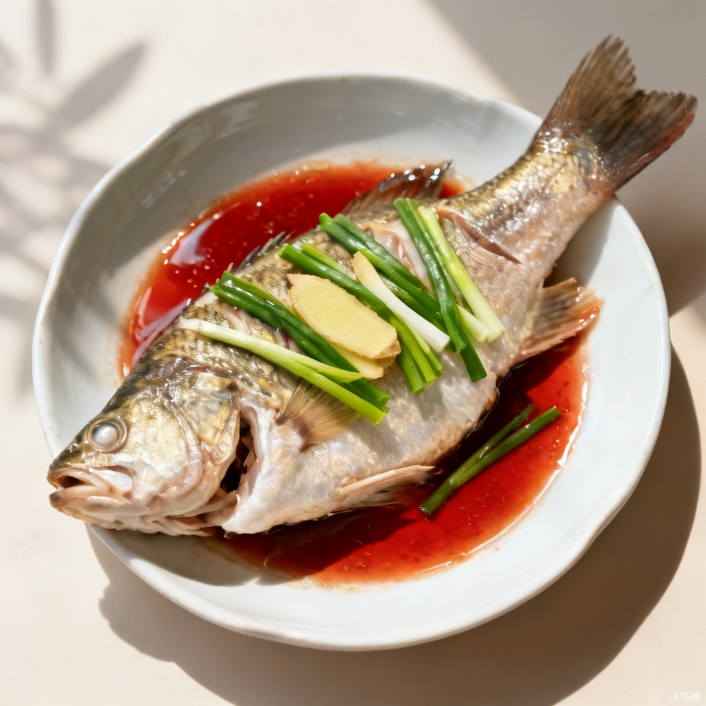

全套屏原型 · 方向① v3 网格卡片风 · S-09 菜品做法（沉浸大图）

‹
清蒸鲈鱼
今日晚餐 · 2 大 1 小
蒸 12 分钟
粤式
刺少适合孩子
用料（2 大 1 小）
用量已按人数缩放凑整；改默认人数在「设置」里
鲈鱼1 条 · 约 500 g
姜4 片
小葱2 根
蒸鱼豉油2 勺
料酒1 勺
食用油1 勺（最后泼香）
分步做法
共 4 步 · 水开再上锅
1鲈鱼洗净两面各划两刀，加料酒、姜片腌 10 分钟。
2水开后上锅，大火蒸 8 分钟，关火再焖 4 分钟。
示意图·正式版为试做实拍